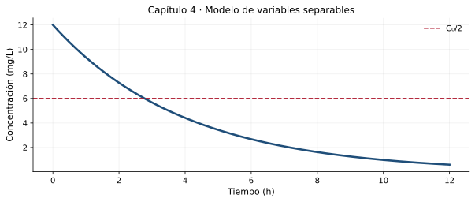

Antes de dividir por \(h(y)\), determine sus ceros: si \(h(y_*)=0\), la función constante \(y(t)=y_*\) puede ser solución de equilibrio. Dividir por \(h(y)\) sin verificarlo puede hacer que desaparezca una solución válida.
Compruebe la idea principal: identifique las condiciones bajo las cuales el procedimiento explicado es válido.
4.2. Separación y datos iniciales
Para \(C\prime=-kC\), con \(k>0\), se obtiene \(\ln|C|=-kt+C_1\) sobre intervalos donde \(C\ne0\). La constante se fija con \(C(0)=C_0\); la solución nula se incorpora por separado.
\[C(t)=C_0e^{-kt},\qquad t_{1/2}=\frac{\ln2}{k}\]
Para una concentración representada en mg/L y tiempo medido en horas, la unidad de \(k\) es h⁻¹. La ley exponencial resulta útil como aproximación, pero la mezcla real puede requerir caudales y volúmenes dependientes del tiempo.
Compruebe la idea principal: identifique las condiciones bajo las cuales el procedimiento explicado es válido.
4.3. Ecuaciones con singularidades
En \(y\prime=t(1+y^2)\) se llega a \(\arctan y=t^2/2+C\). Despejar con tangente exige especificar intervalos que no atraviesen polos. La constante inicial determina la rama accesible y su intervalo máximo.
El intervalo anterior es el intervalo abierto máximo que contiene a \(0\) en el que esa expresión es solución diferenciable.
Compruebe la idea principal: identifique las condiciones bajo las cuales el procedimiento explicado es válido.
4.4. Crecimiento limitado
La ley logística \(P\prime=rP(1-P/K)\) contiene un término que reduce la tasa relativa cuando \(P\) se aproxima a \(K\). Con \(P(0)=P_0>0\), su solución es
\[P(t)=\frac{K}{1+\left(K/P_0-1\right)e^{-rt}}\]
Los equilibrios son \(P=0\) y \(P=K\). Para \(0<P_0<K\), la solución crece hacia \(K\). El modelo es formativo y no debe usarse como pronóstico urbano sin calibración y análisis de incertidumbre.
Compruebe la idea principal: identifique las condiciones bajo las cuales el procedimiento explicado es válido.
Tres problemas resueltos paso a paso
Ejemplo 1. Reducción de concentración
Considere \(C\prime=-0.25C\), \(C(0)=12\) mg/L y \(t\) en horas. Halle \(C(t)\) y el tiempo de semirreducción.
De \(dC/C=-0.25dt\), integrar para obtener \(\ln C=-0.25t+A\), pues \(C_0>0\).
Despejar \(C=Be^{-0.25t}\) y usar \(C(0)=12\) para fijar \(B=12\).
Para \(C=6\), calcular \(t=\ln2/0.25\approx2.773\) horas.
Comprobación y criterio: En \(t=0\), \(P=200\), y al derivar se recupera \(P\prime=0.3P(1-P/1000)\).
Laboratorio de MATLAB
El archivo del capítulo contiene experimentos reproducibles y parámetros modificables, organizados en secciones %%. Puede abrirlo en el Editor, ejecutarlo por partes y convertirlo en Live Script de acuerdo con la versión instalada de MATLAB.

Representación inicial de referencia. Los scripts amplían el análisis con nuevas simulaciones.
Requisito: MATLAB con funciones básicas y ode45. No se necesita Symbolic Math Toolbox para las actividades incluidas.
Resuelva con razonamiento matemático, verifique por sustitución cuando sea posible y discuta dimensiones, dominio o interpretación de los resultados. Se incluyen pistas y respuestas de algunos ejercicios más adelante.
Nivel I · Conceptos y reconocimiento
Resuelva \(y\prime=3y\), \(y(0)=2\).
Resuelva \(y\prime=-2y\), \(y(0)=5\).
Halle los equilibrios de \(y\prime=y(2-y)\).
Resuelva \(y\prime=ty\), \(y(0)=4\).
Nivel II · Procedimientos y verificación
Resuelva \(y\prime=t(1+y^2)\), \(y(0)=0\).
Justifique por qué dividir por \(y\) en \(y\prime=ty\) requiere analizar \(y=0\) por separado.
Resuelva \(dy/dx=x/y\), con \(y(0)=2\), especificando rama.
Determine el intervalo máximo que contiene a 0 de \(y(t)=\tan(t^2/2)\).
Calcule \(t_{1/2}\) si \(C\prime=-0.1C\) con tiempo en días.
Nivel III · Aplicaciones e interpretación
Represente el crecimiento logístico con \(K=1000\), \(r=0.2\), \(P_0=100\).
Discuta qué ocurre si \(P_0>K\) en el modelo logístico.
Para \(y\prime=y(4-y)\), determine signos de la derivada entre equilibrios.
Proponga un modelo de decaimiento de concentración y explique cómo estimaría \(k\) a partir de dos mediciones.
Compruebe la solución \(C=C_0e^{-kt}\) sustituyendo en la EDO.
Trabajo de aplicación
4 actividades al finalizar el tema
A1 · Taller analítico
Resuelva seis problemas separables; indique equilibrios, dominio, unidades cuando correspondan y verificación.
Evidencia mínima: procedimiento razonado, resultados con unidades cuando correspondan, una verificación y conclusión propia.
A2 · MATLAB: semirreducción
Simule el proceso de concentración para \(k=0.1,0.25,0.5\); compare tiempos \(t_{1/2}\).
Evidencia mínima: procedimiento razonado, resultados con unidades cuando correspondan, una verificación y conclusión propia.
A3 · Parámetros logísticos
Represente tres trayectorias logísticas para diferentes datos iniciales; estudie los casos \(P_0<K\) y \(P_0>K\).
Evidencia mínima: procedimiento razonado, resultados con unidades cuando correspondan, una verificación y conclusión propia.
A4 · Informe breve
Documente ventajas y limitaciones de un modelo de pérdida de concentración o crecimiento; presente un análisis de sensibilidad numérica.
Evidencia mínima: procedimiento razonado, resultados con unidades cuando correspondan, una verificación y conclusión propia.
Orientación de valoración, no asignación oficial
Para una actividad docente de práctica sobre 5 puntos se sugiere: planteamiento 1 p.; procedimiento 1.5 p.; verificación/uso de MATLAB 1 p.; interpretación 1 p.; presentación y unidades 0.5 p. El docente decidirá qué actividades se califican según el sílabo vigente.
Autoevaluación conceptual
Abra cada pregunta para comprobar su interpretación. Estas preguntas son de práctica y no constituyen una evaluación en línea.
¿Qué debe comprobarse antes de dividir por \(h(y)\)?
Si \(h(y)=0\) produce soluciones de equilibrio.
¿Por qué importa el intervalo máximo?
Porque la fórmula puede divergir o dejar de ser diferenciable en sus extremos.
¿Cómo se interpreta \(K\) en un modelo logístico?
Como capacidad límite teórica bajo las hipótesis del modelo.
Respuestas seleccionadas de los ejercicios
Contraste solo después de intentar resolver. Una expresión correcta requiere también procedimiento, intervalo de validez e interpretación cuando correspondan.
1: \(y=2e^{3t}\).
2: \(y=5e^{-2t}\).
3: \(y=0,2\).
4: \(y=4e^{t^2/2}\).
7: \(y=\sqrt{x^2+4}\).
8: \((-\sqrt\pi,\sqrt\pi)\).
9: \(\ln2/0.1\approx6.931\) días.
Lectura complementaria y observaciones
El capítulo cumple el contenido 1.4 del sílabo y añade análisis de dominios y equilibrios como soporte conceptual.
Referencia bibliográfica: Calderón, G., Arango, J. y Gómez, A. (2023), Ecuaciones diferenciales para estudiantes de ciencias e ingenierías, Universidad del Valle; Zill, D. G. (2015), Ecuaciones diferenciales con aplicaciones de modelado. Los textos, ejercicios y gráficos de esta página son producciones nuevas y no reproducen el contenido editorial suministrado.